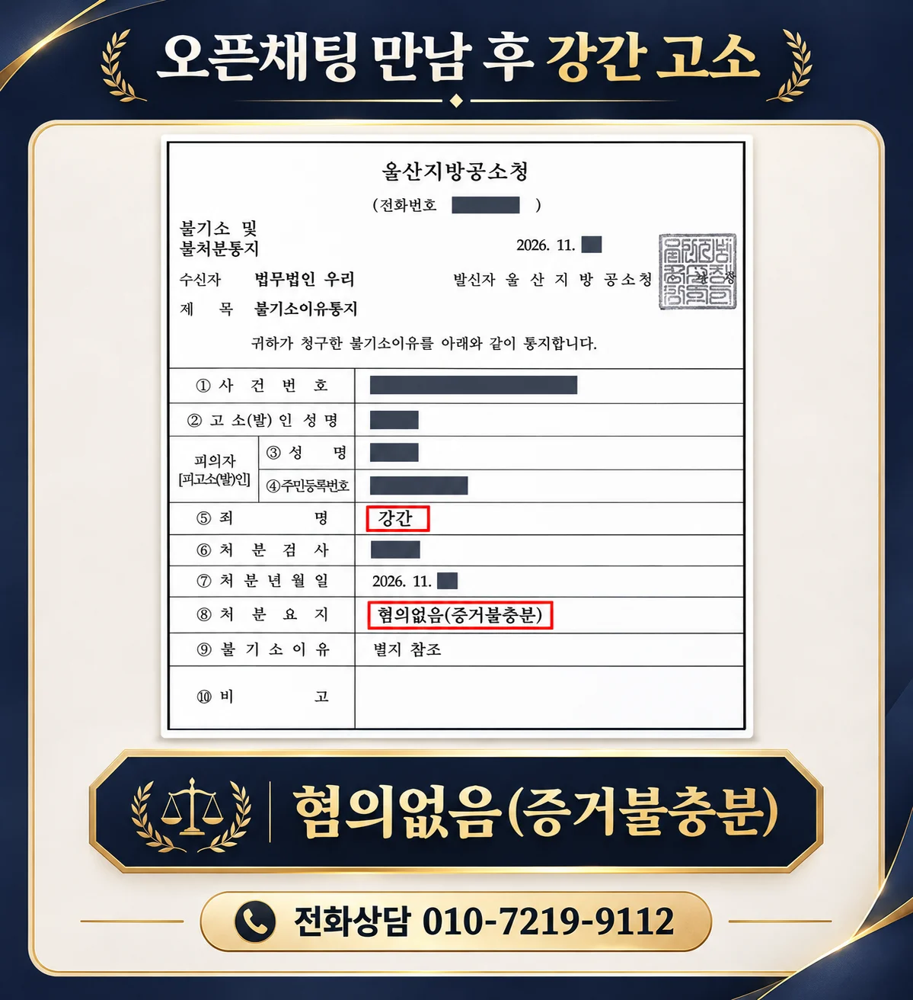

핵심 결과
의뢰인은 카카오톡 오픈채팅을 통해 상대방을 만났습니다. 두 사람은 함께 술을 마신 뒤 성관계를 가졌고, 이후 상대방이 강간 혐의로 고소하면서 경찰 조사를 받게 됐습니다.
그러나 송치는 유죄 판결이나 혐의의 최종 확정을 의미하지 않습니다. 검찰 단계에서 진술의 신빙성과 객관적 증거를 다시 검토해 대응한 결과, 최종적으로 혐의없음(증거불충분) 불기소 처분을 받았습니다.
| 구분 | 내용 |
|---|---|
| 사건 분야 | 강간·성범죄 |
| 진행 경과 | 경찰 수사 후 검찰 송치 |
| 핵심 쟁점 | 당사자 진술의 신빙성, 진술과 객관적 자료의 일치 여부 |
| 핵심 대응 | 증거관계 재검토와 불기소 의견 제출 |
| 최종 결과 | 혐의없음(증거불충분) |
사건 개요
이번 사건은 카카오톡 오픈채팅에서 알게 된 두 사람이 실제로 만나 술을 마신 뒤 성관계를 가진 사안이었습니다.
이후 상대방이 강간을 당했다며 고소하면서, 만남의 경위와 음주 정도, 성관계 전후의 의사와 행동이 핵심 쟁점이 됐습니다.
경찰은 수사를 마친 뒤 사건을 검찰에 송치했습니다. 하지만 송치 통지를 받았다는 사정만으로 혐의가 최종적으로 인정되거나 형사처벌이 확정되는 것은 아닙니다.
검찰은 경찰 기록과 제출된 의견, 당사자 진술 및 객관적 자료를 종합해 기소 또는 불기소 여부를 판단합니다. 따라서 송치 이후에도 기록을 다시 살피고 증거가 혐의를 뒷받침하는지 구체적으로 다툴 필요가 있습니다.
송치 통지를 받은 뒤 주의할 점
- 송치만으로 유죄가 확정됐다고 단정하지 않아야 합니다.
- 기존 진술을 임의로 바꾸거나 새로운 설명을 덧붙이기 전에 기록과 자료를 먼저 확인해야 합니다.
- 문자, 메신저, 통화내역과 이동기록처럼 당시 상황을 확인할 자료를 보존해야 합니다.
- 상대방에게 직접 연락하거나 회유로 오해받을 행동은 피해야 합니다.
핵심 쟁점
첫 번째 쟁점은 신고인의 진술이 구체적이고 일관적인지 여부입니다.
성범죄 사건에서는 진술이 중요한 증거가 될 수 있지만, 진술의 일부만 떼어 판단하는 것은 아닙니다. 사건 전후의 대화, 행동, 시간과 장소에 관한 설명이 서로 맞는지 함께 살펴야 합니다.
두 번째 쟁점은 진술을 뒷받침하는 객관적 자료가 있는지 여부입니다.
오픈채팅과 이후 메신저 대화, 통화내역, 위치·이동 기록 등은 당사자의 설명과 실제 상황이 일치하는지 확인하는 자료가 될 수 있습니다.
세 번째 쟁점은 피의자의 진술이 처음부터 일관되고 객관적 자료와 부합하는지 여부입니다.
단순히 혐의를 부인하는 것에 그치지 않고, 사실관계를 시간순으로 정리해 어떤 자료가 어느 설명을 뒷받침하는지 보여줘야 합니다.
변호 대응
1. 경찰 단계 진술과 수사기록의 쟁점을 다시 정리합니다
조사 과정에서 어떤 질문과 답변이 오갔는지 확인하고, 당사자 진술 사이의 차이와 검토가 필요한 부분을 시간순으로 정리합니다.
2. 진술과 객관적 자료가 일치하는지 대조합니다
사건 전후의 연락 내용과 이동 경로 등 확보된 자료를 진술과 맞춰 보며, 혐의를 뒷받침하기 어려운 지점을 구체적으로 설명합니다.
3. 검찰에 불기소 의견을 제출합니다
단순한 부인 의견이 아니라 증거별 의미와 진술의 신빙성 문제를 정리해 혐의없음(증거불충분) 처분을 구합니다.
최종 결과
이 사건은 경찰에서 검찰로 송치됐지만, 수사기록과 객관적 자료를 토대로 범죄 혐의를 인정하기에 증거가 부족하다는 점을 구체적으로 다퉜습니다.
그 결과 검찰은 강간 혐의에 대해 혐의없음(증거불충분) 불기소 처분을 내렸습니다.
최종 결과: 혐의없음(증거불충분)
경찰 송치 이후에도 진술과 객관적 자료를 다시 검토하고 불기소 의견을 제출해 형사재판으로 넘어가지 않고 사건을 마무리했습니다.
자주 묻는 질문
| 질문 | 답변 |
|---|---|
| 경찰에서 송치되면 유죄인가요? | 아닙니다. 검찰의 기소 여부 판단과 법원의 재판이 남아 있으므로 송치만으로 유죄가 확정되는 것은 아닙니다. |
| 송치 후에도 불기소 처분이 가능한가요? | 검찰이 기록과 추가 자료를 검토해 혐의를 인정할 증거가 부족하다고 판단하면 혐의없음(증거불충분) 처분을 할 수 있습니다. |
| 상대방 진술만 있어도 처벌되나요? | 진술도 증거가 될 수 있지만 구체성, 일관성, 객관적 자료와의 부합 여부 등을 종합해 판단합니다. |
| 검찰 단계에서 무엇을 준비해야 하나요? | 경찰 진술 내용과 사건 전후 대화, 통화·이동 기록 등 객관적 자료를 정리하고 필요한 의견을 제출해야 합니다. |
| 상대방에게 직접 연락해도 되나요? | 회유나 압박으로 오해될 수 있으므로 임의로 연락하기 전에 변호사와 상의하는 것이 안전합니다. |
결론
강간 혐의 사건에서 경찰 송치는 절차의 끝이 아닙니다.
검찰 단계에서 진술의 신빙성과 객관적 자료를 다시 검토해 실제로 혐의를 인정할 충분한 증거가 있는지를 구체적으로 다툰 결과, 혐의없음(증거불충분) 처분을 받을 수 있었습니다.
강성수 변호사는 사건 기록과 의뢰인의 설명을 직접 확인하고, 현재 단계에서 필요한 의견과 자료를 정리합니다.
전화상담 010-7219-9112
이 글은 일반적인 법률 정보 제공을 위한 자료이며, 개별 사건의 결과를 보장하지 않습니다. 구체적인 대응은 사실관계와 증거에 따라 달라질 수 있습니다.